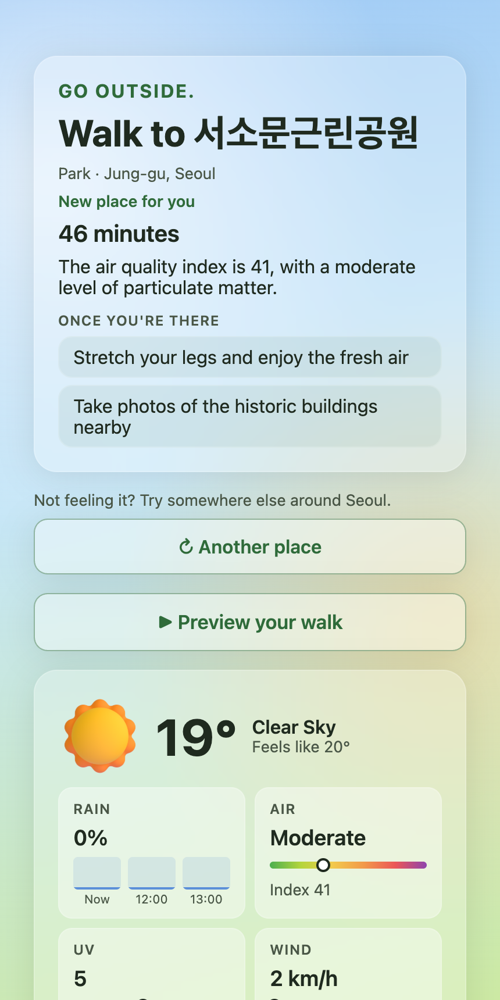
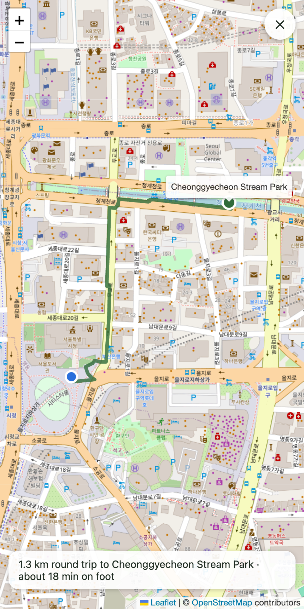
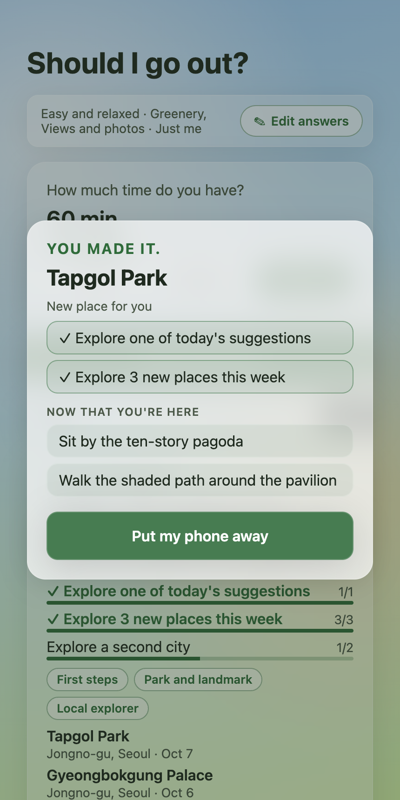

touch-grass-agent
Should I
go out?
A Gemma running on my own computer checks the weather, the air, and the parks nearby, and picks one walk. Then it tells you to put your phone away.
Gemma 3 4B · Ollama · Mastra · Sentry
touch-grass-agent
A Gemma running on my own computer checks the weather, the air, and the parks nearby, and picks one walk. Then it tells you to put your phone away.
Gemma 3 4B · Ollama · Mastra · Sentry


